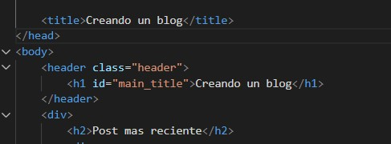
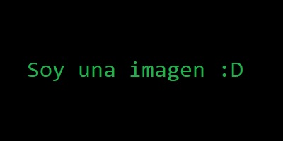

Post mas reciente

¿De que trata esto?
Y aqui es donde va a estar el resumen del primer post, primero lo voy a llenar de basura para ir viendo como se puede ir modificando
y ya despues le voy a ir dando forma, color, sentido, todo lo que en realidad debe de llevar, la verdad estoy muy emocionado porque
al fin voy a poder hacer dos cosas que me gustan, la primera es hacer contenido para internet y la segunda es desarrollar codigo, en este caso,
para mi!
Seguir leyendo
Todos los posts

Link mas muerto que el mar muerto
Aqui iria el segundo post pero la verdad no tengo ni el tercer post preparado, asi que te chingas, tendras que seguir pendiente de que
es lo que hago para ver como se desarrolla esto, es mas, esto lo voy a ocultar, asi que si estas leyendo esto felicidades, te mereces
un CTM por fisgon, pero hey es con amor ❤️ ¿sabes por que? porque quiere decir que sabes como abrir el inspector del navegador
y sabes leer lo que tienes enfrente, ahora que si logras hacer que aparezca esto en el navegador me haras sentir aun mas orgulloso 🥰
Sigue leyendo
Link mas muerto que el mar muerto
Aqui iria el primer post pero la verdad no tengo ni el segundo post preparado, asi que te chingas, tendras que seguir pendiente de que
es lo que hago para ver como se desarrolla esto, es mas, esto lo voy a ocultar, asi que si estas leyendo esto felicidades, te mereces
un CTM por fisgon, pero hey es con amor ❤️ ¿sabes por que? porque quiere decir que sabes como abrir el inspector del navegador
y sabes leer lo que tienes enfrente, ahora que si logras hacer que aparezca esto en el navegador me haras sentir aun mas orgulloso 🥰
Sigue leyendo
Y aqui iria el control de las paginas de los posts, con el numero y todo... SI TAN SOLO SUPIERA COMO HACERLO!